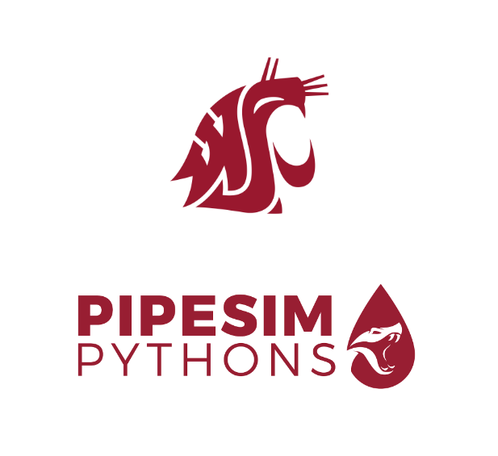
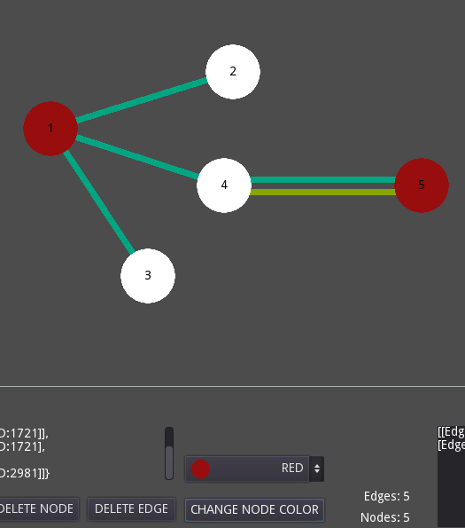

My work
A selection of my range of work
ANT Software
All Things New (ANT) is a group-base community application to challenge others to try new things.

PipeSim
Python Pipe Simulation Model to support a client in their research.

Banana AI
Uses machine learning technology to look at an image of a banana and determine if it is ripe or not.

Node Graph Sketch Pad
Software to create a node graph while showing various graph information.
Airline Flight Search Engine
Program that allows the user to search various airlines, airports and plan flights.
More To Come!
I have several other experiences I will be adding over time.